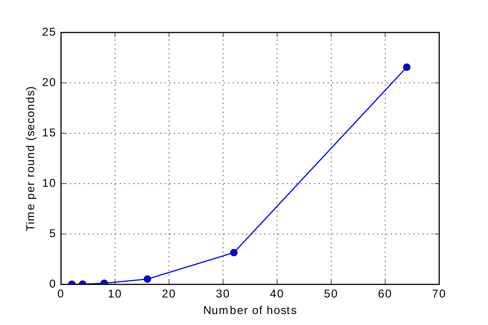

PGP integration with CISC
A little bit of background
PGP
- Pretty Good Privacy.
- Created by Phil Zimmermann in 1991.
- Provides cryptographic privacy and authentication for data communication.
- Internet Standard under the name of OpenPGP
- Web of trust: users act as CA
JVSS
- Joint Verifiable Secret Sharing.
- Can generate threshold digital signature.
- Two phase protocol.
- Advantages: distributed signing, cheating detection, distributed trust, no one knows the long term secret.
CISC
- CISC identity SkipChain
- Goal: provide a simple and secure identity management service

Problem:
Using PGP with more than one device…
What we want:
- Being able to sign message from any device.
- Being able to decrypt message from any device.
- Not losing everything when a device is compromised.
Same key on every device?
- We can sign and decrypt from any device!
- But…
- If one device is lost, the key is lost…
- All the trust gained is lost!
Sub-keys
- Linked to a master key, same trust level.
- Signing resolved!
- Decryption still problematic…
- It becomes complicated to communicate with us…
- Need to know every device we have to communicate with us.
- In case of device loss, revocation of the sub-key.
- What if there is a man-in-the-middle (freeze attack)?
Using skipchains
- We use them to revoke and rotate the sub-keys.
- List of valid sub-keys maintained in the skipchain.
- Can define a maximum epoch for the block.
- Solves the freeze attack!
- But…
- Not backward compatible 😞
- Decryption not solved…
Our solution: CISC and JVSS
- Split our PGP key on a cothority using secret sharing and JVSS
- Have one global public key, sent to PGP servers.
- Each conode only has a share of the key.
- Use CISC to manage the list of authoritative devices
Signing
- We make a signing request from any device.
- Signature will appear to be signed by the split key.
Decryption
- Person wanting to communicate uses our publicly available public key.
- Can request from any authorized device a decryption!
Device loss
- In case of device loss, revoke its access to CISC
- Attacker can temporarily sign/decrypt
- Key is not affected at all
Freeze attack
Also using maximum epoch.
Backward compatibility
- Backward compatible.
- Public key made available as usual.
- Following skipchain only needed for added security (freeze attack)
Implementation in Cothority
Reality check
- Impossible with current implementation of JVSS to bring own key.
- Threshold decryption not present in dedis/crypto.
Interfacing OpenPGP and dedis/crypto
package openpgp
- Straightforward using OpenPGP implementation of golang/x/crypto.
- Able to create valid OpenPGP signature, public and private keys packet.
- Modification in JVSS to use the same standard as EdDSA.
JVSS protocol and JVSS service
package jvss
- Separation of the JVSS protocol in two parts
- Setup protocol
- Creates a shared secret and a public key.
- Gives back Public key + encrypted share of secret.
- Sign protocol
- Initialized with previously created shares.
- Makes round of signing using the shares.
- Service allows to save/load shares
Adding the JVSS service to the Identity service
package identity
- Adding logic for setup and signing
- Only allow authorized device to make requests
Adding everything to the CISC application
package cisc
- pgp setup command
- pgp sign command
- pgp public command
- -arm flag
Benchmark

What's left to be done
- Splitting user's key with JVSS.
- Threshold decryption.